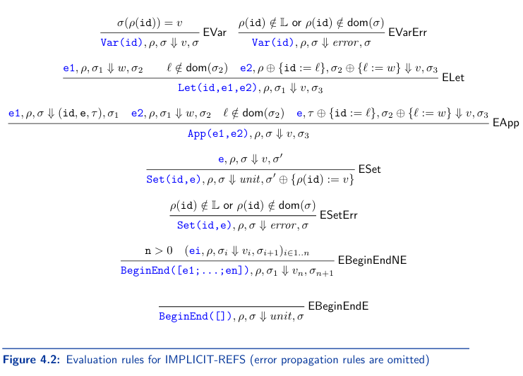

4.3 IMPLICIT-REFS
IMPLICIT-REFS(irefs) is built off of REC
The main concept is that unlike in erefs, where the environment maps the id to an expressed value. In irefs, the environment maps the id to a location which stores the expressed value
4.3.1 Concrete Syntax
Here are some examples of irefs
let x=2
in begin
set x=3;
x
end
let x=2
in let y=x+1
in begin
set y=y+1;
y
end
let x=2
in let f = proc (n) { begin set x=x+1; 1 end }
in let g = proc (n) { begin set x=x+1; 2 end }
in begin
(f 0)+(g 0);
x
end
irefs has the following concerete syntax, new additions since REC are in bold. ⟨Expression⟩ ::= ⟨Number⟩ ⟨Expression⟩ ::= ⟨Identifier⟩ ⟨Expression⟩ ::= ⟨Expression⟩⟨BOp⟩⟨Expression⟩ ⟨Expression⟩ ::= zero?(⟨Expression⟩) ⟨Expression⟩ ::= if⟨Expression⟩then⟨Expression⟩else⟨Expression⟩ ⟨Expression⟩ ::= let⟨Identifier⟩=⟨Expression⟩in⟨Expression⟩ ⟨Expression⟩ ::= (⟨Expression⟩) ⟨Expression⟩ ::= proc(⟨Identifier⟩){⟨Expression⟩} ⟨Expression⟩ ::= (⟨Expression⟩⟨Expression⟩) ⟨Expression⟩ ::= letrec{⟨Identifier⟩(⟨Identifier⟩)=⟨Expression⟩}+ in⟨Expression⟩ ⟨Expression⟩ ::= set⟨Identifier⟩=⟨Expression⟩ ⟨Expression⟩ ::= begin ⟨Expression⟩+(;) end ⟨BOp⟩ ::= +|-|*|/
4.3.2 Abstract Syntax
irefs has the following abstract syntax, new additions since REC are in bold.
type expr =
| Var of string
| Int of int
| Add of expr*expr
| Sub of expr*expr
| Mul of expr*expr
| Div of expr*expr
| Let of string*expr*expr
| IsZero of expr
| ITE of expr*expr*expr
| Proc of string*expr
| App of expr*expr
| Letrec of rdecs*expr
| Set of string*expr
| BeginEnd of expr list
| Debug of expr
and
rdecs = (string*string*texpr option*texpr option*expr) list
The new judgement rules added on top of REC(with alterations to fit the new format) are in figure 4.2 (below)
4.3.3 Interpreter
4.3.3.1 Specification
In irefs all identifiers are mutable. The environment will map all identifiers to locations in the store.
The evaluation judgements take the form
e, p, o ⇓ r, o`
e is an expression p is an environment o is the initial store r is the result o' is the final store
Unlike erefs where p maps identifiers to expressed values, in irefs p maps identifiers to location
Look at EVar in 4.2 (above), this rule reflects that change, the identifier lookup first has to lookup the location first, and then access the contents in the store.
p(id) denotes a location whose contents is looked up in the store o. If p(id) is not a valid location, an error is returned using EVarERR
4.3.4 Updating letrec
letrec in REC added a specific entry to the environment to declare a function recursive. Then once looked up, a closure is created on the fly.
We solve the need to create closures on the fly using circular environments.
A circular environment is an environment env that has an entry to location l on the store, which also holds a closure whose environment also has a reference to l. (see my super cool ms paint on it below)
The new letrec is as follows
let rec eval_expr : expr-> exp_val ea_result =
fun e->
match e with
| Letrec([(id,par,_,_,e)],target)->
let l = Store.new_ref g_store UnitVal in
extend_env id (RefVal l) >>+
(lookup_env >>= fun env->
Store.set_ref g_store l (ProcVal(par,e,env)) >>= fun _->
eval_expr target
)
4.4 Parameter Passing Methods
There are several parameter passing methods in irefs, there are languages in the PLaF/src file that represent them, all of them are forks of irefs.
4.4.1 Call by value
This is the standard parameter passing method that has been used for all languages taught, it does not have it's own language in PLaF/src because the implicit-refs language is using it. Passing a variable to a function will not update the value of the variable outside of that function.
4.4.2 Call by reference
If the argument to a function is a variable, we will give a copy of it's reference to the function. Passing a variable to a function will update the value of the variable outside of that function
ex:
let x = 2
in let f = proc (z) { set z = z+1 }
in begin
(f x);
x
end
This will return (NumVal 2) in irefs because the value of x is checked after the function has happened.
In call by reference, this will instead return 3 because we are updating the value at the reference in memory, not the value passed into the function.
The evaluation rules are the same as in 4.2 (above), but EApp is replaced by EApp1 and EApp2 as seen in 4.3 (below), EApp1 is just EApp, EApp2 applies when the argument of an App is an identifier. In that case, no allocation takes place on the store.
The new code for pass by reference is as follows
fun e->
match e with
| Var(id)-> apply_env id
| _-> eval_expr e >>= fun ev->
return (RefVal (Store.new_ref g_store ev))
and
apply_clos =
...
and
eval_expr : expr-> exp_val ea_result =
fun e->
match e with
...
| App(e1,e2)->
eval_expr e1 >>=
clos_of_procVal >>= fun clos->
value_ofoperand e2 >>=
apply_clos clos
Call by name
In call by name, parameters once passed are freezed until they are actually needed. In App(e1, e2), if e2 is an identifier, it is just like call by reference, where a copy of the address is passed in, and it is looked up in the environment. Copying an address is a constant time operation, so it isn't an issue. Though if e2 is an expression, it's evaluation does not take place but rather e2 and it's current environment are stored for later.
The pair that stores e2 and it's current environment is a thunk. It is structured like Thunk(x+2, [x=NumVal 3])
The evaluation rules for Call by name are the same as irefs (4.2 above), but EApp is replaced with the new rules in 4.5 (below).
To implement call by name, we can update call by reference by adding Thunk to exp_val
type exp_val =
| NumVal of int
| BoolVal of bool
| ProcVal of string*expr*env
| UnitVal
| Thunk of expr*env
then update value_of_operand such that if the argument passed is a variable, behave like call by reference, else create a thunk.
let rec value_of_operand =
fun op->
match op with
| Var id-> apply_env id
| _->
lookup_env >>= fun en->
return (RefVal (Store.new_ref g_store (Thunk(op, en))))
last, we add the ability to thaw(use) Thunk(e, en) by evaluating e under the environment en
let rec eval_expr : expr-> exp_val ea_result =
fun e->
match e with
| Int(n)-> return (NumVal n)
| Var(id)->
apply_env id >>=
int_of_refVal >>=
Store.deref g_store >>= fun ev->
(match ev with
| Thunk(e,en)-> return en >>+ eval_expr e
| _-> return ev)
...
Call by need
A drawback of call by name is a thunk is thawed every time it is needed.
In call by name, running this program will compute the factorial of 5 a total of 4 times, 1 for each time y is used in g
letrec f(x) = if zero?(x) then 1 else x*(f (x-1))
in let g = proc (y) { y+y+y+y }
in (g (f 5))
We can apply memoization from CS115 to optimize this. In our case we will store the thawed value in the environment. Think of it kinda like caching from 382
let rec eval_expr : expr-> exp_val ea_result =
fun e ->
match e with
| Int(n)-> return @@ NumVal n
| Var(id)->
apply_env id >>=
int_of_refVal >>= fun l->
Store.deref g_store l >>= fun ev->
(match ev with
| Thunk(e,en)->
return en >>+
eval_expr e >>= fun ev->
Store.set_ref g_store l ev >>= fun _->
return ev
| _-> return ev)
...
In call by need, the first example above will only compute the factorial of 5 only 1 time.
Note that sometimes call by need and call by name may sometimes return different results as a result of how they operate. (ex, evaluating something with a print statement will cause it to print, since call by need only evaluates once, it will only be printed once, while in call by need it will be printed twice)